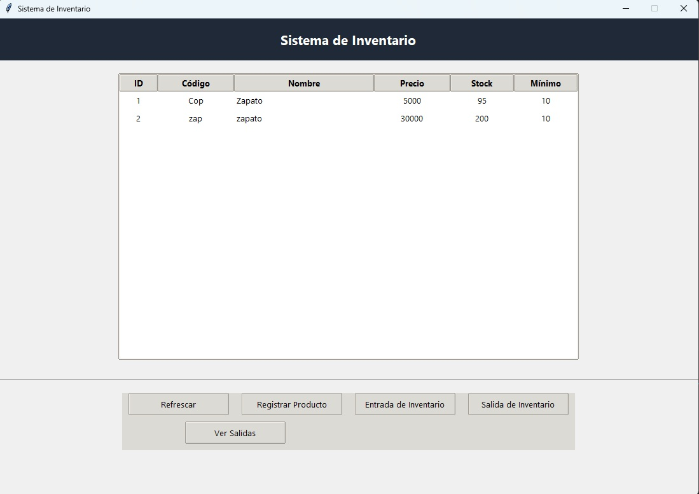
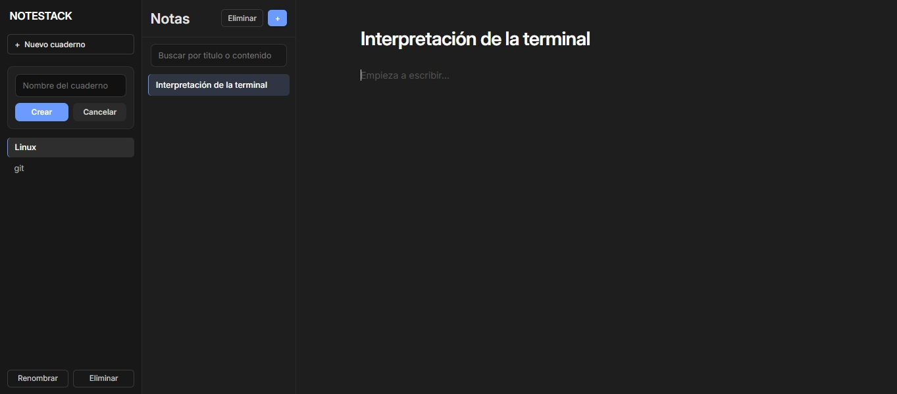
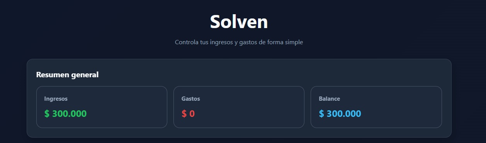

Hola, soy Robinson Rodriguez. Mi entusiasmo por la tecnología me lleva a explorar constantemente nuevas herramientas y lenguajes de programación. Me encanta resolver problemas y crear soluciones creativas. Además, siempre estoy al tanto de las últimas tendencias en el mundo de la informática. La programación es mi pasión y mi forma de dar vida a ideas innovadoras. 🚀💻
Lo utilizo para lógica en el navegador, interacción y mejoras progresivas en mis proyectos web.
Construyo estructuras semánticas, estilos responsivos y componentes visuales para interfaces web.
Lo uso en aplicaciones de escritorio, automatización y lógica de negocio para proyectos personales.
Lo aplico para editar recursos visuales y preparar elementos gráficos para presentaciones o interfaces.
Me enfoco en explicar ideas con claridad y mantener una comunicación cercana en entornos técnicos y educativos.
Estoy acostumbrado a colaborar, recibir retroalimentación y aportar al cumplimiento de objetivos compartidos.
Busco soluciones funcionales pero también presentables, especialmente al diseñar interfaces y flujos.
Me interesa seguir mejorando, aprender nuevas herramientas y reconocer con honestidad lo que todavía me falta por dominar.
Un recorrido que conecta formación técnica, experiencia educativa y trabajo en soporte tecnológico, mientras continúo fortaleciendo mi perfil como estudiante de Ingeniería de Sistemas.
Actualmente estudio Ingeniería de Sistemas en la CUN y complemento ese proceso con experiencia real en soporte, inventarios y uso de tecnología en contextos educativos.
Bases académicas que han fortalecido mi perfil técnico, pedagógico y analítico.
Fortalezco bases en desarrollo de software, bases de datos, redes y análisis de sistemas, con enfoque en construir soluciones prácticas y seguir creciendo como desarrollador.
Desarrollé fundamentos en mantenimiento de equipos, soporte técnico, redes básicas y operación de sistemas informáticos aplicados a entornos reales.
Fortalecí competencias didácticas, comunicación y planeación educativa, habilidades que hoy también aportan a mi forma de trabajar en equipo y explicar soluciones.
Reforcé fundamentos de redes, ciberseguridad e infraestructura, ampliando mi visión técnica sobre conectividad y entornos de soporte.
Afianzé conceptos de seguridad, control de accesos y protocolos institucionales, útiles para entornos organizados y manejo responsable de procesos.
Espacios donde he aplicado soporte, organización y acompañamiento tecnológico en escenarios reales.
Brindé soporte técnico, mantenimiento preventivo y correctivo, y apoyo en el control de inventarios, contribuyendo a mantener la operación tecnológica más ordenada y funcional.
Acompañé procesos de aprendizaje en básica primaria e integré herramientas tecnológicas para hacer las clases más dinámicas, claras y cercanas para los estudiantes.
Participé en planeación de clases, acompañamiento académico y uso de recursos digitales, fortaleciendo organización, responsabilidad y adaptación a distintos contextos.

Sistema completo de gestión de inventario desarrollado con Python, interfaz gráfica moderna con Tkinter y base de datos SQLite.

Es una aplicación web tipo SPA desarrollada con HTML, CSS y JavaScript puro que permite organizar información mediante cuadernos y notas, ofreciendo funcionalidades como creación, edición, eliminación, búsqueda y guardado automático en LocalStorage; su arquitectura sigue un patrón modular (UI → Controller → Services → Storage), lo que la hace ligera y escalable.

Este proyecto se desarrolla por fases como parte de mi aprendizaje en desarrollo web. Actualmente cuenta con un MVP funcional construido con JavaScript puro. Próximamente será migrado a React y conectado a una base de datos en la nube con Supabase.
Sistema de gestión de inventario desarrollado en Python con interfaz Tkinter y base de datos SQLite.
PRODUCTOS
---------
id (PK)
codigo
nombre
precio_venta
stock_actual
stock_minimo
MOVIMIENTOS
-----------
producto_id (FK)
cliente_id (FK)
tipo_movimiento
cantidad
fecha
Aplicación web SPA desarrollada con HTML, CSS y JavaScript puro para organizar información mediante cuadernos y notas.
UI
│
├── Controller
│
├── Services
│
└── Storage (LocalStorage)
Aplicación web personal para llevar el control de ingresos, gastos, balance, categorías y resúmenes financieros. Desarrollada por fases como parte de mi aprendizaje en desarrollo web.
Fase 1 · Actual → HTML + CSS + JavaScript + LocalStorage
Fase 2 → IndexedDB
Fase 3 → React
Fase 4 → Supabase + Autenticación + Nube